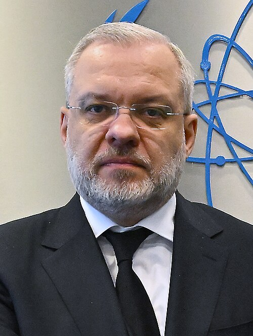
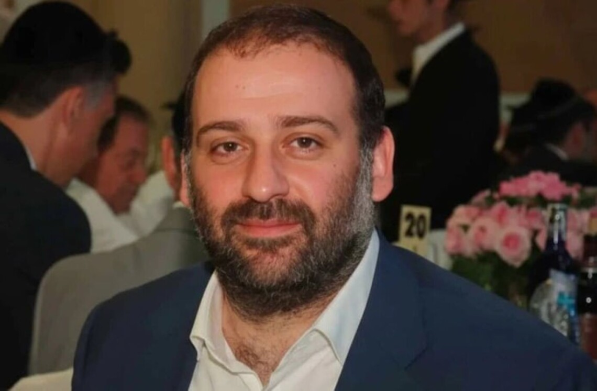
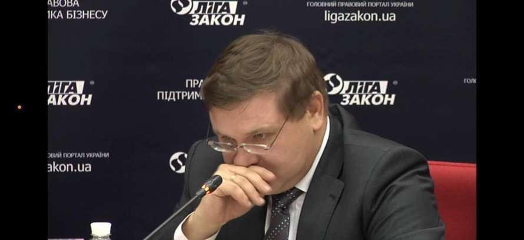

Виконавчий директор Інспекції із забезпечення якості ОСНАД Олег Канцуров одночасно входив до наглядової ради АТ «Українські розподільчі мережі» (УРМ) — державного оператора обленерго.
Цю наглядову раду, за повідомленнями медіа, Міністерство енергетики сформувало в 2023 році без проведення конкурсу і без затвердження Кабінетом Міністрів — у період, коли міністром енергетики був Герман Галущенко, нинішній фігурант справи «Мідас». До складу ради тоді ввійшли Канцуров, Євгеній Литвинов, Андрій Костриця, Світлана Білько та Андрій Почтарьов.
У грудні 2025 року, вже після оприлюднення справи «Мідас», уряд ініціював перезавантаження корпоративного управління в держенергетиці: наглядову раду УРМ — разом із радами низки інших стратегічних енергокомпаній — було повністю звільнено, а Міненерго оголосило конкурсний відбір нового складу.
Сам факт перебування посадовця ОСНАД у наглядовій раді державної енергокомпанії, сформованій без конкурсу за міністра, який пізніше став фігурантом найбільшої корупційної справи в енергетиці за останні роки, не є автоматичним доказом порушення. Але він створює пряме питання про потенційний конфлікт інтересів: чи мав Канцуров підстави самоусуватися від питань, що стосувалися аудиторських фірм енергетичного сектору, і чи декларувався цей конфлікт публічно.
Людина, яка за посадою мала перевіряти якість роботи аудиторів держенергокомпаній, одночасно входила до наглядової ради однієї з них — призначена без конкурсу міністром, чию причетність до корупційної схеми в тій самій галузі слідство публічно задокументувало через рік.

Міністр енергетики, формував наглядову раду УРМ

Фігурант справи «Мідас» з енергетичними зв’язками
Сформована без конкурсу та пов’язана з керівництвом держенергетики

ОСНАД / член наглядової ради УРМ
Енергоатом та Оператор ГТС — тендери за аномально низькою ціною
За законом контроль якості аудиторських послуг здійснює система суспільного нагляду — ОСНАД, яка складається з Ради нагляду та Інспекції. До повноважень Ради нагляду належить нагляд за діяльністю Інспекції, затвердження кошторису ОСНАД і схвалення звіту про його виконання.
За відповіддю Мінфіну, закон не містить норм про підпорядкування ОСНАД Міністерству фінансів або про здійснення Мінфіном функцій перевірки діяльності ОСНАД, надходжень і використання його коштів, а також дій виконавчого директора Інспекції. Це створює специфічну конструкцію: ОСНАД має значні повноваження щодо аудиторського ринку, але не є структурою, яку напряму контролює Мінфін. Тому питання незалежності й підзвітності самого ОСНАД мають окреме значення — і саме в цій структурі обіймав керівну посаду Канцуров.
У серпні 2023 року ДП «НАЕК "Енергоатом"» провело відкриті торги з особливостями на аудит фінансової звітності за 2023–2024 роки. Очікувана вартість закупівлі становила 25,82 млн грн.
За результатами аукціону переможцем стало ТОВ «Кроу Ерфольг Україна», яке запропонувало виконати роботи за 10,32 млн грн — приблизно 40% від очікуваної вартості закупівлі.
За повідомленнями ГС «ЦФР», переможець мав обґрунтувати «аномально низьку ціну». У тій же публікації йдеться, що в аукціоні брали участь три компанії, а дві з них — ТОВ «Кроу Ерфольг Україна» та ТОВ «Кроу Україна» — мали перетини за співробітниками й контактними даними. Окремо зазначалося, що обидві компанії пов'язані з особою Михайленка, який у відкритих базах фігурує як помічник народного депутата Данила Гетманцева.
Сам по собі цей факт не є доказом порушення. Але він є достатньою підставою для перевірки трьох речей: економічної обґрунтованості ціни, фактичної незалежності конкуренції на торгах і достатності ресурсів виконавця для аудиту компанії масштабу «Енергоатома».
У вересні 2024 року ТОВ «Оператор газотранспортної системи України» проводило торги на бухгалтерські й аудиторські послуги з очікуваною вартістю 11,069 млн грн.
За даними ГС «ЦФР», у торгах брали участь п'ять компаній. Перемогло ТОВ «Кроу Ерфольг Україна» з пропозицією 2,199 млн грн — і в тій же публікації прямо зазначено, що така ціна є аномально низькою і потребує обґрунтування.
Тобто йдеться не про один випадок. У двох великих державних енергетичних закупівлях фіксується та сама логіка: очікувана вартість суттєво вища, пропозиція Crowe — суттєво нижча, і в публічних джерелах одразу з'являється формулювання про аномально низьку ціну.
Формально низька ціна в публічних закупівлях виглядає як економія бюджетних коштів. Але аудит стратегічної держкомпанії — не закупівля паперу чи меблів. Якісний аудит потребує команди, часу, процедур, перевірки контрактів, пов'язаних осіб, закупівель, оцінки ризиків шахрайства, аналізу контрольного середовища та роботи з великим масивом фінансової інформації.
Тому низька ціна сама по собі не доводить проблему, але ставить практичне питання: за рахунок чого вона стала можливою? Є нейтральні пояснення — ефективна методологія, дешевша операційна модель, нижча маржа, стратегічний вхід у держсектор через конкурентну ціну. Але є й питання, що потребують перевірки: чи не виконувалася частина робіт через пов'язані структури, чи не компенсувалася низька ціна іншими договорами, чи не виникали ризики для незалежності аудитора.
За чотири роки загальний дохід ТОВ «Кроу Ерфольг Україна» зріс з 54,085 млн грн у 2022 році до 160,626 млн грн у 2025-му. Дохід від аудиту підприємств суспільного інтересу та дочірніх структур зріс з 14,286 млн грн до 55,733 млн грн. Кількість клієнтів суспільного інтересу зросла з 48 до 115, а кількість енергетичних клієнтів — з 10 до 29.
Водночас чисельність персоналу зросла лише з 90 до 166 осіб. Виручка зросла майже втричі, дохід від аудиту підприємств суспільного інтересу — майже вчетверо, а штат — менш ніж удвічі.
Це не доводить порушення. Але це створює об'єктивне питання про операційну модель: хто саме виконував зрослий обсяг робіт, чи залучалися субпідрядники, чи працювали пов'язані структури, і як забезпечувався контроль якості.
У 2024–2025 роках до портфеля Crowe увійшли ключові державні енергоактиви: «Енергоатом», ГК «Нафтогаз України», Оператор ГТС, «Укрнафта», «Укргазвидобування», «Хмельницькобленерго», «Миколаївобленерго», «Дніпровська ТЕЦ».
Це означає, що питання не обмежується одним тендером «Енергоатома» — йдеться про ширший процес входження однієї аудиторської фірми в аудит усього стратегічного державного енергосектору. Сам по собі такий процес може бути законним, але він потребує пояснення: чому саме ця компанія почала швидко отримувати великих державних енергетичних клієнтів, як відбувався відбір, скільки було учасників у кожному тендері й чи перевірялися аномально низькі пропозиції.
Окремий блок питань стосується структури групи Crowe в Україні. У звітах про прозорість згадується широкий периметр юридичних осіб, які працюють під брендом Crowe або пов'язані з бенефіціарами «Кроу Ерфольг Україна»: ТОВ «Кроу Аудит енд Еккаунтін Україна», ТОВ «Кроу Україна», ТОВ «Кроу Михайленко», ТОВ «Кроу Еккаунтінг Україна», ТОВ «Кроу Бісі Україна», АО «Кроу ЕйБі Україна» та інші структури.
Консолідована виручка всього Crowe-периметру публічно не відома. Це важливо, бо звітність по одній юридичній особі не завжди показує реальний обсяг ресурсів, доходів і робіт, які можуть розподілятися між пов'язаними компаніями. Наявність групи компаній сама по собі не є порушенням, але для аудиту підприємств суспільного інтересу важливо розуміти, чи не виконувалися частини робіт пов'язаними структурами, чи не надавалися тим самим клієнтам супутні послуги, і чи не виникали ризики для незалежності аудитора.
У 2024 році «Кроу Ерфольг Україна» провело аудит фінансової звітності «Енергоатома» за 2023 рік на 10,32 млн грн, а у 2025 році Кабмін повторно призначив компанію аудитором «Енергоатома» на 2025–2026 роки — на той-таки контракт, що вже викликав питання про аномально низьку ціну.
10 листопада 2025 року НАБУ й САП оголосили про завершення 15-місячного розслідування й викриття організованої злочинної групи, що впливала на «Енергоатом» — операція «Мідас». За даними бюро, учасники схеми системно отримували від підрядників «Енергоатома» 10–15% від суми контрактів, погрожуючи блокуванням платежів або виключенням з переліку постачальників тим, хто відмовлявся платити. Слідство називає цей механізм «шлагбаумом». Через схему, за оцінкою НАБУ, пройшло близько 100 млн доларів.
Серед фігурантів — бізнесмен Тимур Міндіч (фігурує під позначенням «Карлсон»), партнер студії «Квартал 95» і колишній бізнес-партнер Президента, який залишив Україну й був заочно заарештований; та Герман Галущенко (позначення «Професор») — на момент подій міністр енергетики, пізніше міністр юстиції, якому, за версією слідства, приписують вплив на кадрові рішення в «Енергоатомі» й лобіювання окремих контрактів. У лютому 2026 року Галущенка затримали і йому висунули звинувачення.
За повідомленнями «Судово-юридичної газети», аудиторська компанія «Імона-Аудит» подала позов до Київського окружного адміністративного суду щодо протиправності рішень керівництва ОСНАД. У судовому реєстрі — майже сотня рішень та відкритих провадженнь з претензіями до ОСНАД.
Без судових рішень твердження про тиск на аудиторський ринок не можна подавати як доведений факт. Але фактом є інше: частина аудиторського ринку оскаржує дії ОСНАД у судах, тобто конфлікт між регулятором і окремими учасниками ринку вже перейшов у правову площину.
Перше. Виконавчий директор Інспекції ОСНАД Олег Канцуров одночасно входив до наглядової ради УРМ, сформованої без конкурсу Міненерго за часів Германа Галущенка — нинішнього фігуранта справи «Мідас», затриманого в лютому 2026 року. Цю раду уряд звільнив повністю в грудні 2025 року в межах перезавантаження корпоративного управління після «Мідаса».
Друге. «Кроу Ерфольг Україна» перемогла у закупівлі аудиту «Енергоатома» з ціною 10,32 млн грн при очікуваній вартості 25,82 млн грн — пропозиція потребувала обґрунтування як аномально низька.
Третє. У закупівлі Оператора ГТС очікувана вартість становила 11,069 млн грн, а пропозиція Crowe — 2,199 млн грн, також публічно названа аномально низькою.
Четверте. За 2022–2025 роки в Crowe різко зріс портфель клієнтів суспільного інтересу, кількість енергетичних клієнтів і загальна виручка — значно швидше, ніж зростав штат.
П'яте. Навколо «Кроу Ерфольг Україна» існує ширший периметр пов'язаних юридичних осіб, консолідовані фінансові показники якого публічно не відомі.
Шосте. Частина аудиторського ринку оскаржує дії ОСНАД у судах, зокрема у справі «Імона-Аудит».
Жоден із цих фактів не доводить корупцію чи змову, і жоден не пов'язує Crowe безпосередньо зі схемою «шлагбаум», задокументованою НАБУ. Але разом вони формують предмет суспільного інтересу: чи достатньо прозорою була система відбору аудиторів для стратегічних держенергокомпаній за міністра, який згодом став фігурантом найбільшої енергетичної корупційної справи, чи перевірявся реальний ресурс виконавця аномально дешевих тендерів, і чи існував конфлікт інтересів у самій системі аудиторського нагляду, поки нею керував Канцуров.
Конфлікт інтересів Канцурова. Чи впливало перебування керівника Інспекції ОСНАД у наглядовій раді УРМ на регуляторні рішення щодо аудиторських фірм, які працювали з держенергосектором, і чи декларував він цей конфлікт.
Закупівлі. Хто був замовником, яка була очікувана вартість, скільки учасників, які цінові пропозиції, хто ухвалював рішення про переможця, яке обґрунтування надала компанія щодо аномально низької ціни і чи визнав замовник це обґрунтування достатнім.
Ресурси аудитора. Які команди виконували аудит «Енергоатома», Оператора ГТС, «Нафтогазу», «Укрнафти» та інших держенергокомпаній; скільки годин витрачено; чи залучалися субпідрядники або пов'язані структури.
Незалежність. Чи отримували пов'язані з Crowe структури додаткові договори з тими самими клієнтами на консалтинг, бухгалтерський супровід чи методологічні послуги, що можуть створювати ризик для незалежності аудитора.
Роль ОСНАД. Чи перевіряв ОСНАД якість аудиту Crowe, які рекомендації надавалися за результатами перевірок і чи оцінювався ризик залучення пов'язаних осіб або субпідрядників.
На сьогодні є набір перевірених фактів, які не варто перебільшувати, але й не можна ігнорувати. Керівник Інспекції ОСНАД — органу, що контролює якість аудиту держкомпаній, — одночасно сидів у наглядовій раді держенергокомпанії, сформованій без конкурсу міністром, який рік потому опинився в центрі найбільшої енергетичної корупційної справи в історії незалежної України. У цей самий період у великих закупівлях аудиторських послуг для держенергосектору фіксувалися пропозиції Crowe, суттєво нижчі за очікувану вартість і прямо названі аномально низькими, а сама компанія за 2022–2025 роки різко наростила портфель клієнтів суспільного інтересу й енергетичних клієнтів, маючи значно повільніше зростання штату.
Це не вирок і не доказ змови. Але це достатня підстава для парламентського, журналістського й професійного аналізу того, як в Україні відбираються аудитори для стратегічних державних енергетичних компаній, хто контролює якість такого аудиту і чи не перетворилася формальна економія на системний ризик для прозорості державного сектору саме в той момент, коли галузь, як з'ясувалося, була охоплена корупційною схемою на 100 мільйонів доларів.
Матеріал підготовлено на основі повідомлень ГС «ЦФР», офіційних повідомлень НАБУ, аналітичних даних щодо фінансових показників ТОВ «Кроу Ерфольг Україна» (звітність про прозорість, реєстр клієнтів суспільного інтересу), відповіді Міністерства фінансів щодо статусу ОСНАД та публікацій українських медіа щодо наглядової ради УРМ і операції «Мідас». Зв'язок між аудиторськими тендерами Crowe та справою «Мідас» носить інституційний і кадровий характер (перетин персоналу в системі нагляду за держенергетикою) — публічно відомі матеріали справи «Мідас» не містять згадок про Crowe чи будь-яку аудиторську фірму, і цей матеріал не стверджує, що аудитор був причетний до корупційної схеми «шлагбаум».